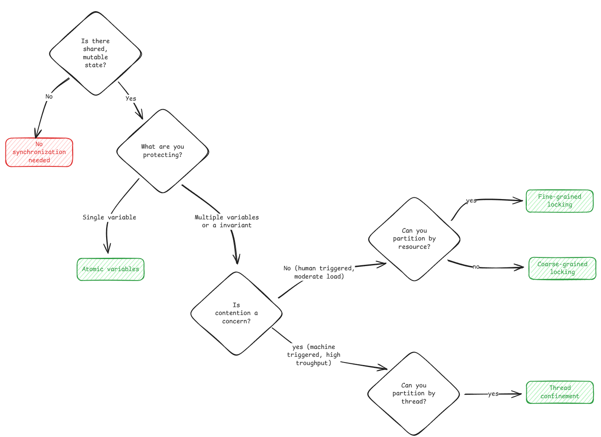
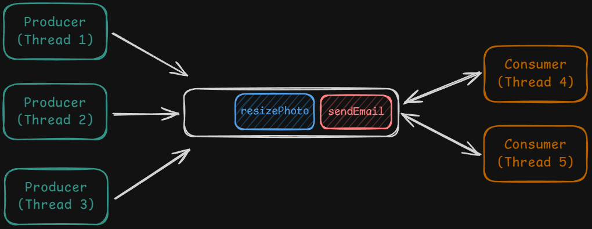
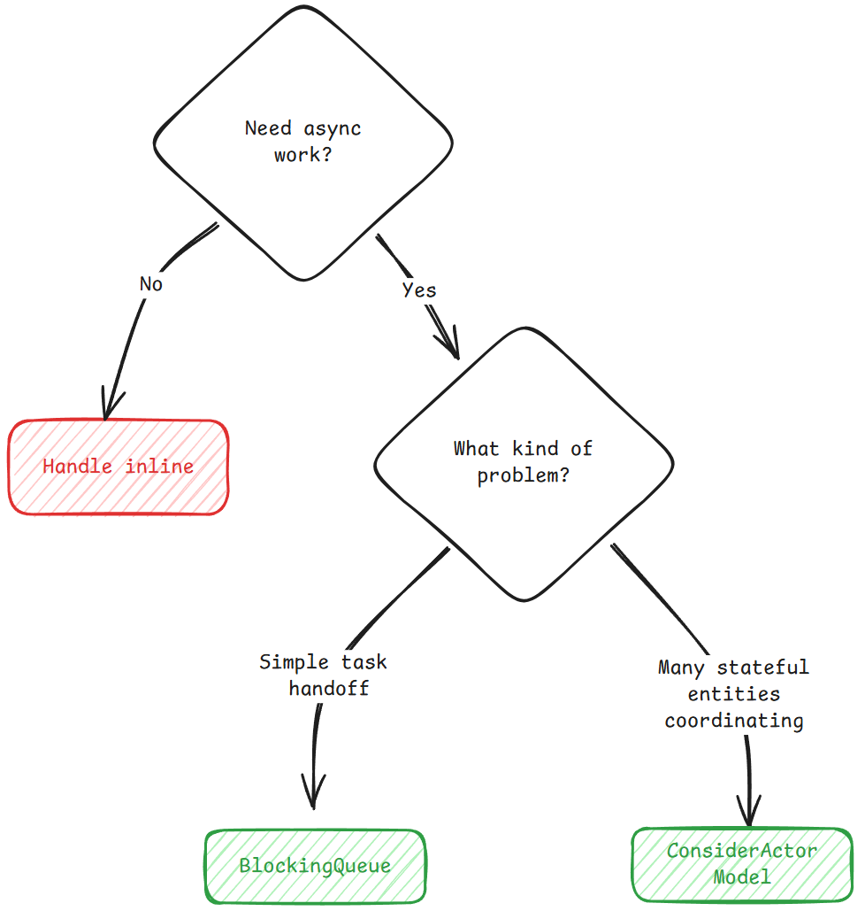
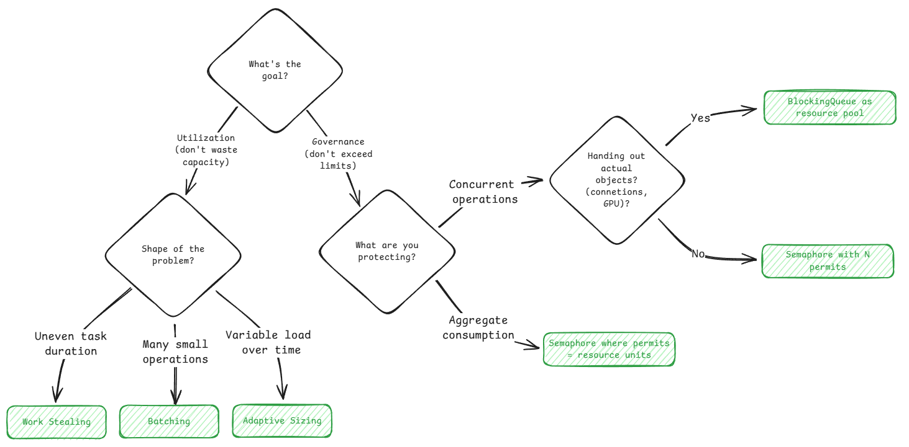

Concurrency occurs when 2 or more process/thread tries to change same resource
Process - An isolated container with its own address space and resources, to run a set of instructions.
Thread - Independent execution path inside a process
Operation from different thread can interleave (Both in multiprocessor/single processor system)
Thread safe operation on single variable without locks
using System.Threading;
int counter = 0;
Interlocked.Increment(ref counter); // Thread-safe increment
Provides mutual exclusion. Only one thread can execute until lock is held
private readonly object _lock = new object();
lock (_lock)
{
// Only one thread can be here at a time
balance += amount;
}
Counting locks, N permits.
using System.Threading;
var permits = new SemaphoreSlim(5); // Allow 5 concurrent operations
await permits.WaitAsync(); // Block if no permits available
try
{
DoWork();
}
finally
{
permits.Release(); // Always release, even on exception
}
Thread wait efficiently for a condition to become true, release lock and sleeps otherwise.
using System.Threading;
private readonly object _lock = new object();
lock (_lock)
{
while (!condition)
{
Monitor.Wait(_lock); // Release lock and sleep
}
// Condition is now true
}
Thread safe producer consumer handoff.
using System.Collections.Concurrent;
var queue = new BlockingCollection<Task>(boundedCapacity: 100);
queue.Add(task); // Blocks if queue is full
var t = queue.Take(); // Blocks if queue is empty
| Problem Type | What Breaks | Solutions | Common Problems |
|---|---|---|---|
| Correctness | Shared state is updated concurrently | Locks, atomics, thread confinement | Check-then-act, read-modify-write |
| Coordination | Threads need ordering or handoff | Blocking queues, actors, event loops | Async request processing, bursty traffic |
| Scarcity | Resources are limited | Semaphores, resource pools | Concurrent op limits, resource consumption, object reuse |
Prevent data corruption when multiple thread access shared state.
Solutions:
Using one lock to block all operation. Creates a critical section where only one thread can execute at a time
Example - Ticket Booking
using System.Collections.Generic;
public class TicketBooking
{
private readonly object _bookingLock = new object();
private Dictionary<string, string> _seatOwners = new Dictionary<string, string>();
public bool BookSeat(string seatId, string visitorId)
{
lock (_bookingLock)
{
if (_seatOwners.ContainsKey(seatId))
{
return false;
}
_seatOwners[seatId] = visitorId;
return true;
}
}
}
C# Lock automatically releases lock on block end / exception
Read-Write Lock / Shared-exclusive lock
For read heavy data store, like cache/config
using System.Collections.Generic;
using System.Threading;
public class Cache
{
private readonly ReaderWriterLockSlim _rwLock = new();
private readonly Dictionary<string, string> _data = new();
public string Get(string key)
{
_rwLock.EnterReadLock();
try
{
return _data.TryGetValue(key, out var value) ? value : null;
}
finally
{
_rwLock.ExitReadLock();
}
}
public void Put(string key, string value)
{
_rwLock.EnterWriteLock();
try
{
_data[key] = value;
}
finally
{
_rwLock.ExitWriteLock();
}
}
}
Multiple locks, each lock protects smaller piece of data
Example - Ticket Booking - Lock per seat
using System.Collections.Concurrent;
public class TicketBookingFineGrained
{
private readonly ConcurrentDictionary<string, object> _seatLocks =
new ConcurrentDictionary<string, object>();
private readonly ConcurrentDictionary<string, string> _seatOwners =
new ConcurrentDictionary<string, string>();
private object GetLock(string seatId)
{
return _seatLocks.GetOrAdd(seatId, _ => new object());
}
public bool BookSeat(string seatId, string visitorId)
{
lock (GetLock(seatId))
{
if (_seatOwners.ContainsKey(seatId))
{
return false;
}
_seatOwners[seatId] = visitorId;
return true;
}
}
}
Uses CPU instruction to read-modify-write variable in single uninterruptible step
using System.Threading;
public class BookingStats
{
private int _bookedCount = 0;
public void OnSeatBooked()
{
Interlocked.Increment(ref _bookedCount);
}
public int GetBookedCount()
{
return Interlocked.CompareExchange(ref _bookedCount, 0, 0);
}
}
Complex Updates
using System.Threading;
public class ConcurrencyTracker
{
private int _maxConcurrent = 0;
public void UpdateMaxConcurrent(int current)
{
int observed;
do
{
observed = _maxConcurrent;
if (current <= observed)
{
return;
}
} while (Interlocked.CompareExchange(ref _maxConcurrent, current, observed) != observed);
}
}
Partition the data so each thread owns its slice
Check a value, Act on it : Another thread work updates the condition in between
SOLUTION - Make Check and Act Atomic - Coarse Grain Locking
Examples
Read a value, Process, Write : Another thread modifies
SOLUTION - Atomic Variable for single variable, Lock for multiple
Example

Coordination is threads communicating with each other

// Busy Waiting
while (true)
{
if (queue.Count > 0)
{
var task = queue.Dequeue();
Execute(task);
}
}
// Sleep Poling
while (true)
{
if (queue.Count > 0)
{
var task = queue.Dequeue();
Execute(task);
}
else
{
Thread.Sleep(100);
}
}
Solution needed for
Queue - Shared State
Wait/Notify
Thread waits for condition to become true, otherwise sleeps
Not used in interviews
Blocking Queues
Thread safe queue with special behavior when empty/full
using System.Collections.Concurrent;
public class TaskScheduler
{
private readonly BlockingCollection<Action> _queue =
new BlockingCollection<Action>(boundedCapacity: 1000);
public void SubmitTask(Action task)
{
_queue.Add(task); // Blocks if queue is full
}
public void WorkerLoop()
{
while (true)
{
var task = _queue.Take(); // Blocks if queue is empty
task();
}
}
}
Options on When queue fills up:
Graceful shutdown when threads in take() blocked mode
Threads independent (Actor), 3 properties each
Queue handles concurrent accesses
In blocking queue, different thread can act on same data (Locks needed), but here, each thread owns its own data
using System.Collections.Concurrent;
public abstract class Actor<T>
{
private readonly BlockingCollection<T> _mailbox = new();
private readonly CancellationTokenSource _cts = new();
protected Actor()
{
Task.Run(() => Run(_cts.Token));
}
public void Send(T message)
{
_mailbox.Add(message);
}
protected abstract void OnReceive(T message);
public void Stop()
{
_cts.Cancel();
_mailbox.CompleteAdding();
}
private void Run(CancellationToken token)
{
try
{
foreach (var message in _mailbox.GetConsumingEnumerable(token))
{
OnReceive(message);
}
}
catch (OperationCanceledException) { }
}
}
Email Service with Actors
public record EmailRequest(string To, string Subject, string Body);
public class EmailActor : Actor<EmailRequest>
{
private readonly EmailClient _emailClient = new();
protected override void OnReceive(EmailRequest request)
{
_emailClient.Send(request.To, request.Subject, request.Body);
}
}
// Usage: no shared state, no locks needed
public class SignupHandler
{
private readonly EmailActor _emailActor = new();
private readonly UserRepository _userRepository;
public void HandleSignup(SignupRequest request)
{
var user = _userRepository.Save(new User(request.Email));
// Send message to actor - returns immediately
_emailActor.Send(new EmailRequest(
user.Email,
"Welcome!",
"Thanks for signing up..."
));
}
}
Challenges
When to use actors
Process Request Async
using System.Collections.Concurrent;
public record EmailTask(string Recipient, string Template, string Data);
public class EmailService
{
private readonly BlockingCollection<EmailTask> _emailQueue =
new BlockingCollection<EmailTask>(boundedCapacity: 10000);
// API handler (producer)
public void Signup(string email, string name)
{
// Fast: Save user to database
_userRepository.Save(email, name);
// Fast: Enqueue background work
_emailQueue.Add(new EmailTask(email, "welcome", name));
// Return immediately - user sees instant response
}
// Worker thread (consumer)
public void EmailWorker()
{
while (true)
{
var task = _emailQueue.Take();
// Slow: Connect to email server and send
_emailClient.Send(task.Recipient, task.Template, task.Data);
}
}
}
Handle Bursty Traffic
using System.Collections.Concurrent;
public record PurchaseRequest(string UserId, string EventId, int Quantity);
public class TicketService
{
// Sized for 10-second burst at 10,000 req/s
private readonly BlockingCollection<PurchaseRequest> _purchaseQueue =
new BlockingCollection<PurchaseRequest>(boundedCapacity: 100000);
// API handler (producer) - handles bursts
public void PurchaseTicket(string userId, string eventId, int quantity)
{
var request = new PurchaseRequest(userId, eventId, quantity);
// Enqueue request - returns immediately even during spike
if (!_purchaseQueue.TryAdd(request, TimeSpan.FromMilliseconds(100)))
{
throw new ServiceUnavailableException("Too many requests, try again");
}
}
// Worker pool sized for normal load (100 workers)
public void PurchaseWorker()
{
while (true)
{
var request = _purchaseQueue.Take();
// Process at normal rate - database, payment, inventory
ProcessPurchase(request);
}
}
}

Scarcity is about managing limited resources when demand exceeds supply
A semaphore is a counter that limits how many threads can do something at once
OS premitives puts thread to sleep if permits unavailable, wakes them with permits are released
using System.Threading;
public class APIClient {
private readonly SemaphoreSlim _requestPermits = new SemaphoreSlim(5);
public async Task<Response> MakeRequestAsync(string endpoint) {
await _requestPermits.WaitAsync();
try {
return await _httpClient.GetAsync(endpoint);
} finally {
_requestPermits.Release();
}
}
}
WaitAsync() for async code or Wait() for synchronousConnection pools needs to be handed out to threads instead of just keeping the count. Needs to be reused
using System.Collections.Concurrent;
public class ConnectionPool {
private readonly BlockingCollection<Connection> _availableConnections;
public ConnectionPool(int poolSize) {
_availableConnections = new BlockingCollection<Connection>(poolSize);
for (int i = 0; i < poolSize; i++) {
_availableConnections.Add(CreateNewConnection());
}
}
public Connection Acquire() {
return _availableConnections.Take(); // Blocks if empty
}
public void Release(Connection conn) {
_availableConnections.Add(conn);
}
public void ExecuteQuery(string query) {
var conn = Acquire();
try {
conn.Execute(query);
} finally {
Release(conn);
}
}
}
Challenge
Timeout based queueu
using System.Collections.Concurrent;
public class ConnectionPoolWithTimeout {
private readonly BlockingCollection<Connection> _availableConnections;
private readonly TimeSpan _timeout;
public ConnectionPoolWithTimeout(int poolSize, TimeSpan timeout) {
_availableConnections = new BlockingCollection<Connection>(poolSize);
_timeout = timeout;
for (int i = 0; i < poolSize; i++) {
_availableConnections.Add(CreateNewConnection());
}
}
public Connection Acquire() {
if (_availableConnections.TryTake(out var conn, _timeout)) {
return conn;
}
throw new TimeoutException($"No connection available within {_timeout.TotalMilliseconds}ms");
}
public void ExecuteQuery(string query) {
var conn = Acquire();
try {
conn.Execute(query);
} finally {
_availableConnections.Add(conn);
}
}
}
Limit Concurrent Operations - Semaphore
Number of concurrent operations within limits
using System.Threading;
using System.IO;
public class DownloadManager {
private readonly SemaphoreSlim _downloadSlots = new SemaphoreSlim(3);
public async Task DownloadAsync(string url, string destination) {
await _downloadSlots.WaitAsync();
try {
var data = await _httpClient.DownloadAsync(url);
await File.WriteAllBytesAsync(destination, data);
} finally {
_downloadSlots.Release();
}
}
}
Limit Aggregate Consumption - Semaphore
Resource utilization within limits. Variable resource consumption per operation
using System.Threading;
using System.IO;
public class DiskWriter {
private const int MB = 1024 * 1024;
private readonly object _lock = new object();
private int _available = 100; // 100 MB
public async Task WriteFileAsync(byte[] data, string path) {
int permits = Math.Max(1, (data.Length + MB - 1) / MB);
lock (_lock) {
while (_available < permits) {
Monitor.Wait(_lock);
}
_available -= permits;
}
try {
await File.WriteAllBytesAsync(path, data);
} finally {
lock (_lock) {
_available += permits;
Monitor.PulseAll(_lock);
}
}
}
}
Reuse Expensive Objects - Blocking Queues
Maximizing Utilization
SOLUTIONS
